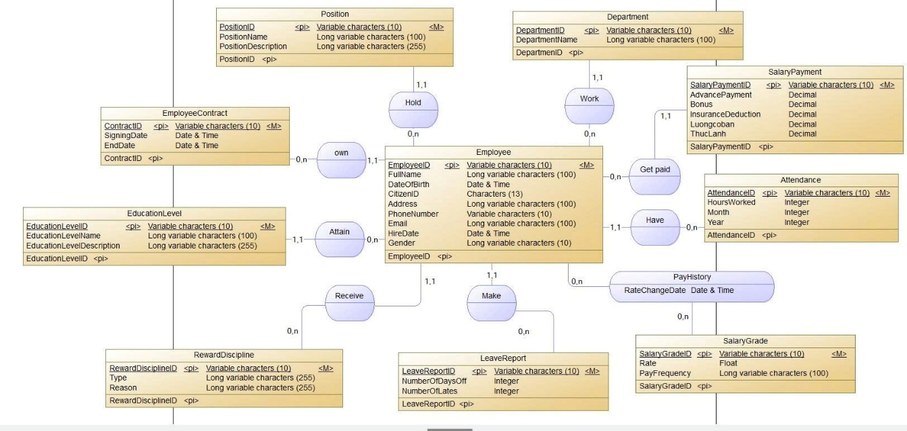

Human Resources & Payroll Database Management System
Designed a relational SQL database system for HR and payroll operations, including stored procedures, functions, triggers, views, transactions, indexes, and reporting-ready data structures.
SQL
Database Design
Procedures
Triggers
Power BI
- Built structured SQL scripts for HR and payroll data management.
- Used procedures, functions, triggers, and transactions to support business rules.
- Created views and reporting layers for Power BI analysis.